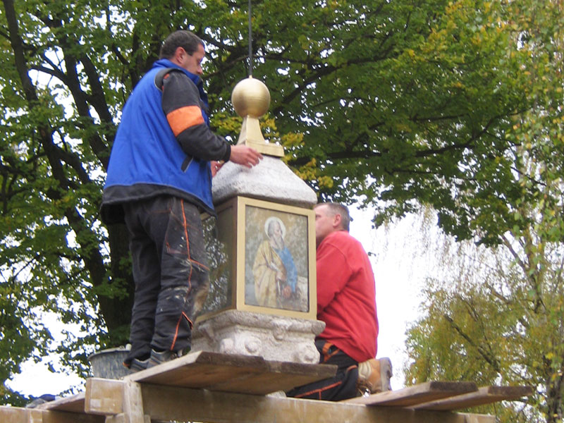
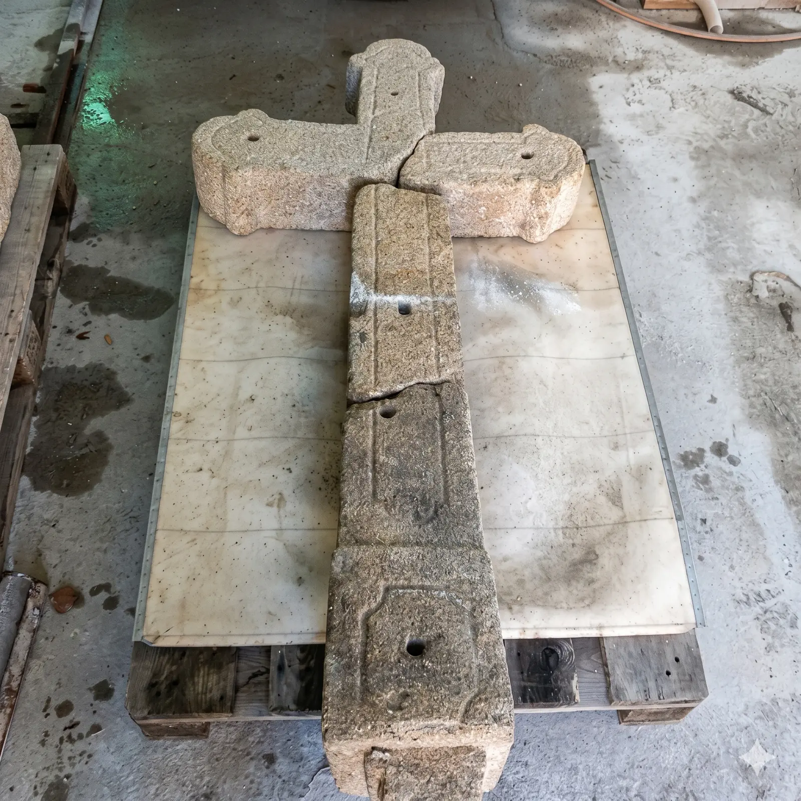
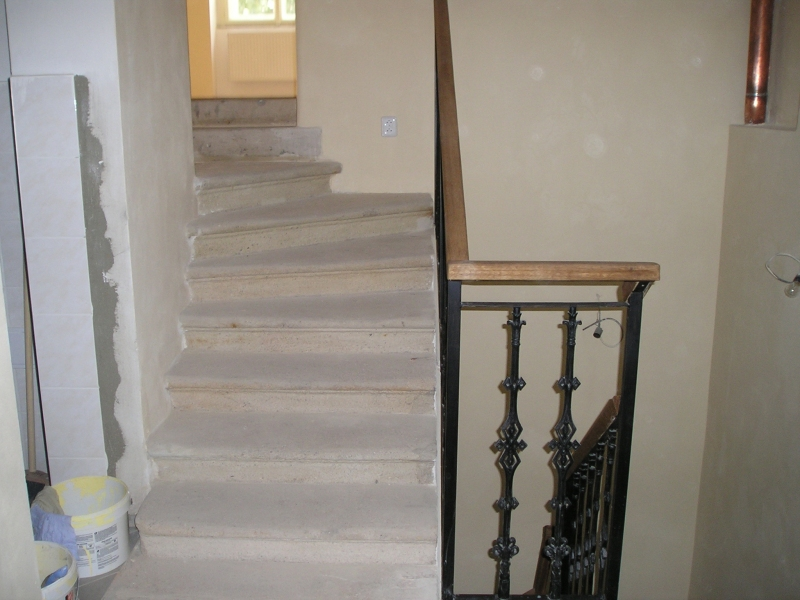
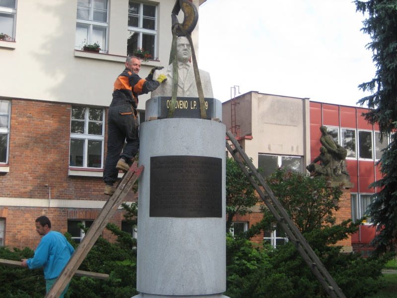

Provádíme profesionální renovace starých kamenných prvků pro oživení skvostů, na kterých se podepsal dlouhý čas a potřebují naši odbornou péči.
Provádíme renovace starých kamenných památníků, monumentů z 1. světové války, schodišť, zašlých portálů, starých žulových schodů, žulových soklů starých domů a dalších kamenných prvků.
Krásu přírodního kamene nemohou nahradit žádná umělá šidítka, takže investice do údržby kamene se určitě vyplatí. Obvykle je zákazník po odstranění nesmyslných nátěrů a omítek ohromen tím, jaká nádhera se mu zjevila. Kamenné památníky znovu ohromí své okolí krásou původního uměleckého zpracování.
Navracíme původní důstojnost a detaily monumentům z 1. světové války a dalším historickým památníkům.
Zbavíme kámen nánosů času, starých barev a obnovíme strukturu starých žulových schodů i portálů.
Očištění starých kamenných soklů výrazně pozvedne vzhled a hodnotu celé historické budovy.
Využíváme speciální jehlové pneumatické pistole, které zaručují šetrné a precizní očištění kamene.
Za dobu našeho působení máme za sebou spoustu náročných renovací. Ke každé práci přistupujeme nanejvýš opatrně a profesionálně.
Renovace je náročný proces, který vyžaduje kvalitní nástroje a pečlivý přístup zkušeného renovátora. Očištění a restaurování provádíme za pomoci kompresoru a speciální pneumatické pistole, ve které jsou uchyceny kmitající jehly. Tím je zaručeno dokonalé odstranění nečistot bez poškození samotného kamene.


Záchrana historického nebo rodinného kamenného prvku je investicí, která se vždy vyplatí, protože odhalí původní neopakovatelnou krásu kamene.
cca 1.000 Kč / m²
Cena je orientační (uvedena bez DPH) a odvíjí se podle stavu znečištění a devastace konkrétního prvku. V ceně jsou zahrnuty veškeré potřebné nástroje a odborná práce našeho zkušeného renovátora.
Prohlédněte si výsledky naší odborné restaurátorské práce, kdy jsme kameni navrátili jeho původní lesk.


Máte na svém pozemku nebo v obci kamenný prvek, který si zaslouží odbornou renovaci? Svěřte ho do našich rukou!